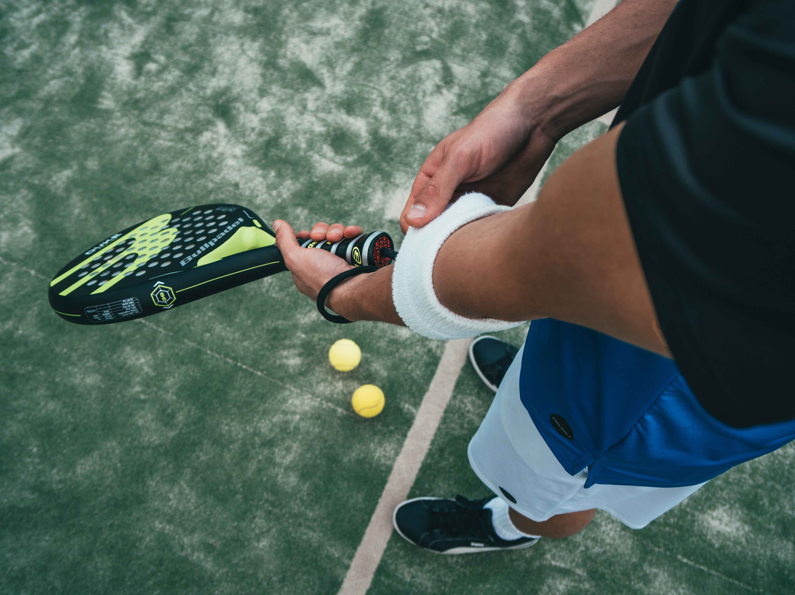
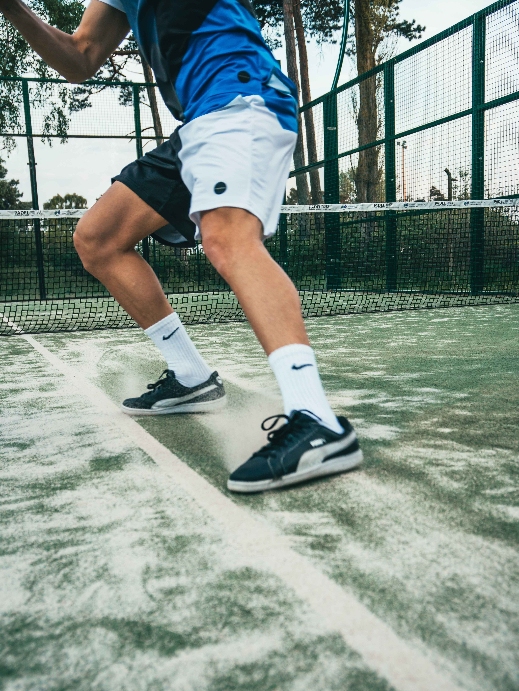
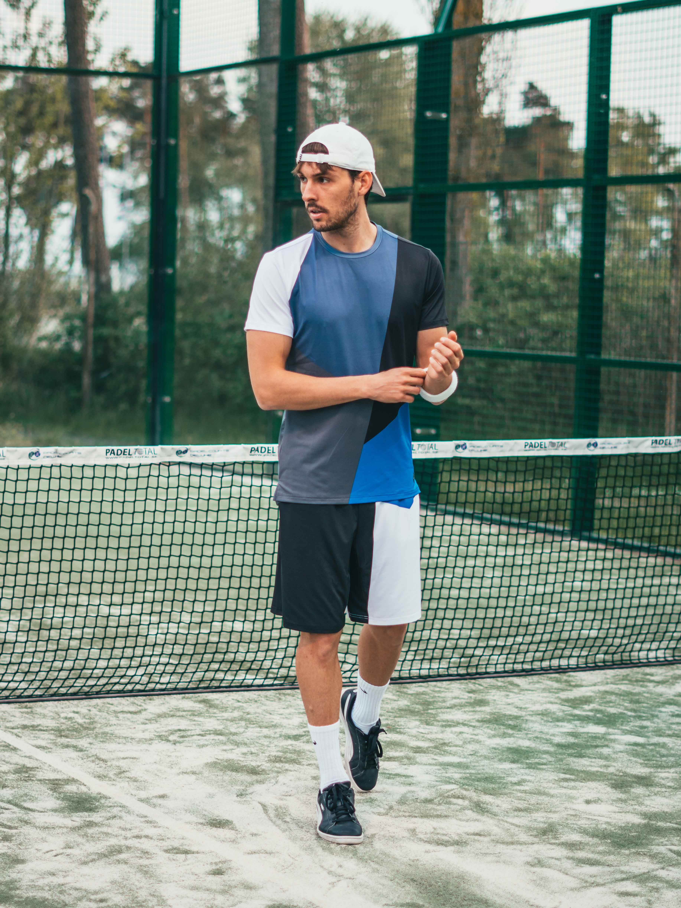
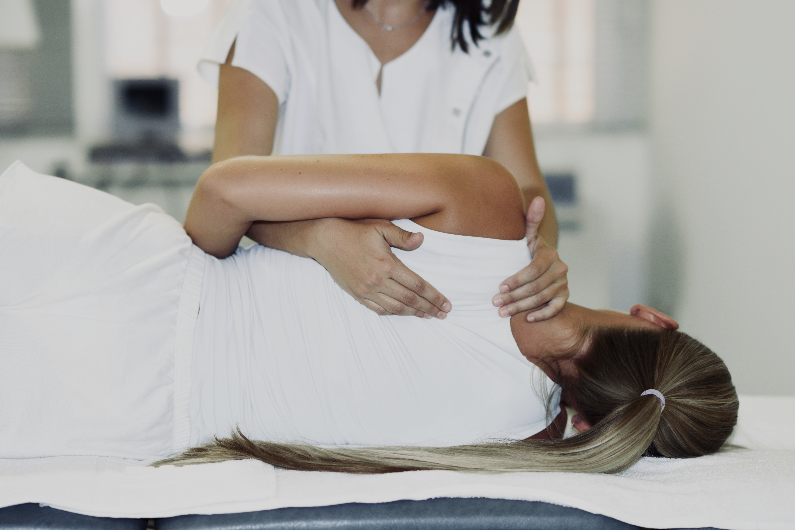
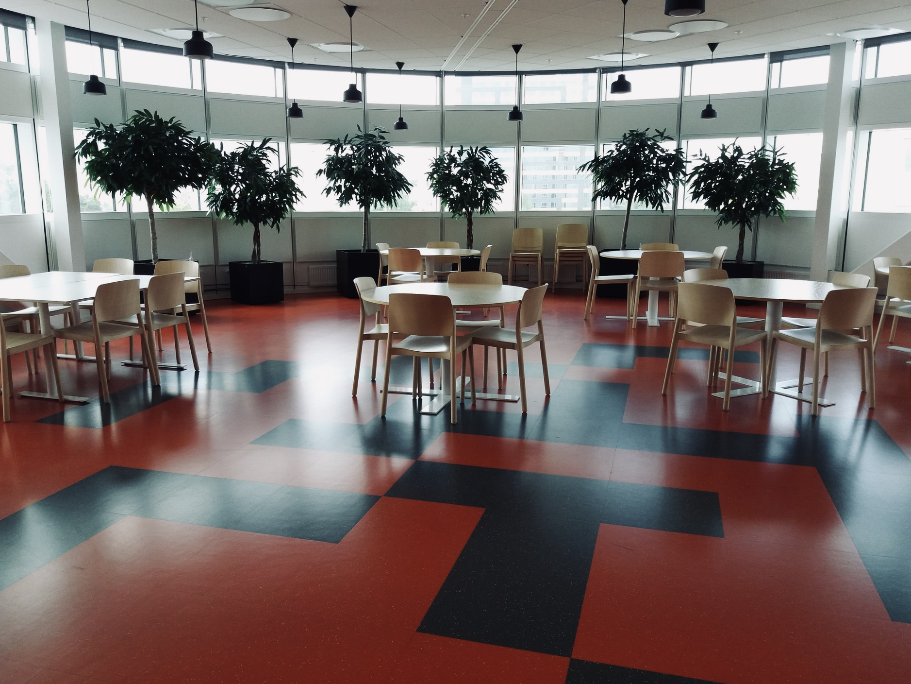

La Escuela Padel Nuestro está dirigida a todo tipo de jugadores y edades. Contarás con un
monitor
exclusivo para perfeccionar tu juego.

Escuela de pádel
En el Club Padel UPM organizamos torneos y campeonatos para empresas, y diferentes tipos de
eventos. ¡Infórmate!
Organización de eventos

Contamos con un amplio equipo de monitores para que perfecciones tu juego independientemente
del
nivel que poseas. Entrenamientos personales y especializados.
Preparación física

Tratamos a cada paciente individualmente. Para ello contamos con los mejores profesionales y
el
mejor equipo para poder recuperarse de lesiones y volver a la práctica deportiva con el
máximo
rendimiento.

Fisioterapia
Continúa el post-partido reponiendo fuerzas en nuestro bar-restaurante. Disponemos de un
menú
especializado con las mejores comidas y tapas típicas de la Comunidad de Madrid.

Bar-restaurante
En los vestuarios encontrarás taquillas gratuitas para dejar tus pertenencias personales y
no tener
que preocuparte por ellas durante el partido, y después, podrás disfrutar de una
reconfortante ducha
caliente.